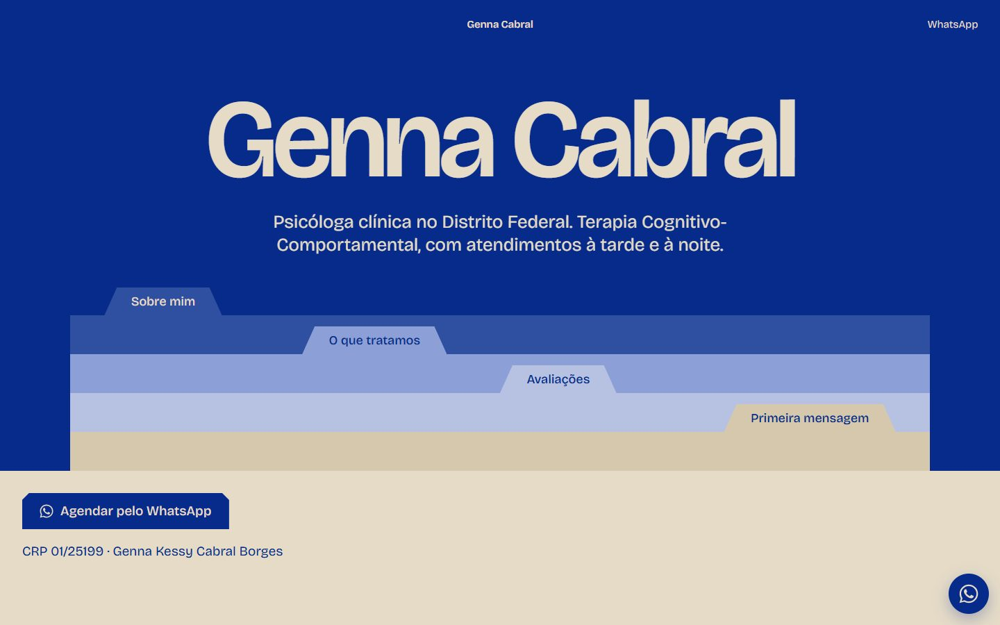
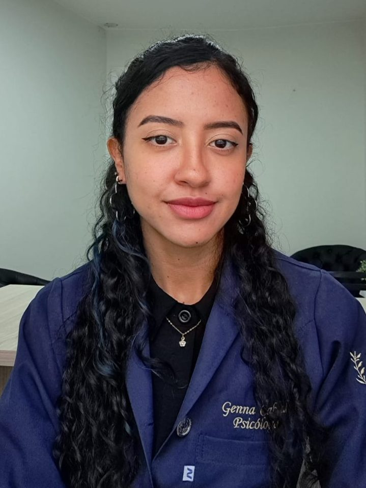
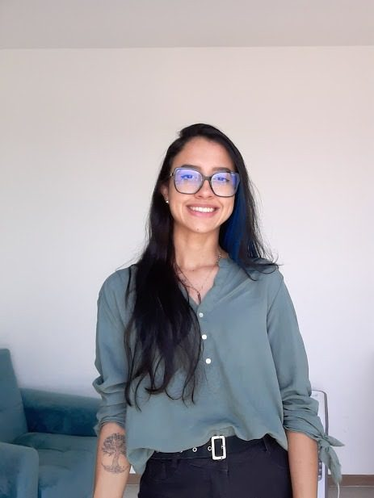

Escolha de estilo para o site da Genna
Cada quadro mostra a primeira tela de um estilo, já com o nome e o texto da Genna. Os estilos vêm da biblioteca da taste-skill (20 direções de design, 56 paletas e 44 combinações de fontes, tiradas de 247 sites premiados). A escolhida vira uma versão nova, numa pasta própria. As versões antigas ficam intactas.
A · Pastas (One motif)já existe: versão 2

Como é
Uma forma só (a aba de pasta) se repete em tudo. As pastas da abertura levam às seções.
Sensação
Organizada, acolhedora, com personalidade.
Cores e fonte
Azul-cobalto sobre areia · Bricolage Grotesque
B · Faixa no meio (Quiet instrument)

Como é
A foto dela ocupa a tela inteira. Tudo fica numa faixa fina no meio da tela. Quase sussurra.
Sensação
Calma, discreta, elegante. A mais "silenciosa" das seis.
Cores e fonte
Osso, verde e chocolate · League Spartan + Figtree
Precisa de
Uma foto boa, grande e na horizontal. As fotos de hoje são pequenas e ficariam borradas.
C · Palco dividido (Split stage)
Psicóloga clínica no Distrito Federal. Terapia Cognitivo-Comportamental, à tarde e à noite.

Como é
A tela fica dividida ao meio. A foto dela fica parada de um lado enquanto o texto rola do outro.
Sensação
Próxima e pessoal, como um cartão impresso ao lado de um retrato.
Cores e fonte
Papel-jornal e dourado · Clash Grotesk
Precisa de
Uma foto vertical boa. A de hoje já serve para começar.
D · Cartão de consulta (Page is the object)
Tardes e noites
Distrito Federal
Como é
O site inteiro é o cartão de agendamento da Genna. O cartão fica sobre a foto e as seções são as "faces" dele.
Sensação
Concreta e organizada. Lembra o cartão que se recebe no consultório.
Cores e fonte
Azul-marinho, branco e laranja · Switzer
Precisa de
Uma foto do consultório ou do ambiente de atendimento, de fundo.
E · Revista (Editorial report)
Psicóloga clínica no Distrito Federal, com Terapia Cognitivo-Comportamental à tarde e à noite.
Agendar pelo WhatsAppTerapia com método
Como é
Montada como uma matéria de revista: título enorme com serifa, colunas de texto e foto de capa.
Sensação
Sofisticada e séria. Fundo escuro com detalhe em laranja.
Cores e fonte
Grafite e laranja · Bodoni Moda + Jost
Precisa de
Fotos com cara de ensaio (luz boa, fundo limpo).
F · Capítulos de cor (Colour chapters)
GennaCabral
Psicóloga clínica no Distrito Federal. Terapia Cognitivo-Comportamental, à tarde e à noite.
Como é
Cada seção é um "capítulo" com uma cor lisa de ponta a ponta, como cartazes em sequência. A abertura não tem foto.
Sensação
Alegre, ousada, jovem. A mais chamativa das seis.
Cores e fonte
Laranja, sálvia, amarelo e preto · Stack Sans
Precisa de
Nada além das fotos atuais.